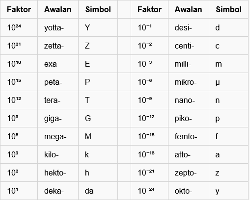
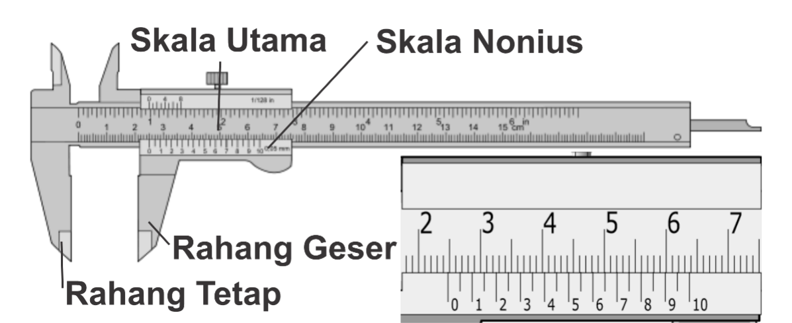
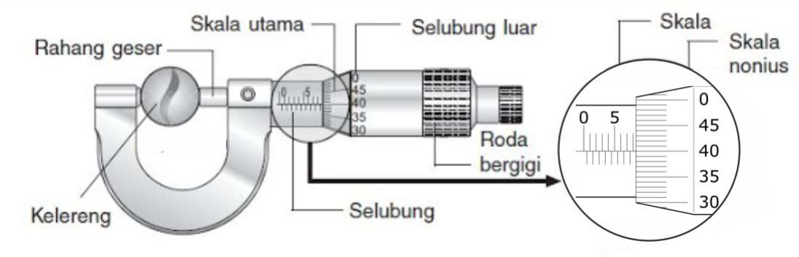

# Besaran dan Pengukuran --- - Besaran dan Satuan - Analisis Dimensi - Pengukuran dan Galat - Alat Ukur (Jangka Sorong, Mikrometer Sekrup, Neraca Tiga Lengan) - Aturan Angka Penting --- ### Besaran dan Satuan - Besaran menyatakan apa yang kita ukur. - Satuan adalah standar yang kita pakai untuk mengukur. - Hasil pengukuran adalah perbandingan dari apa yang kita ukur dengan standar yang kita pakai. --- ### Satuan Internasional (SI) |No. | Besaran | Dimensi | Notasi| Satuan | Simbol | | --- | --- | :---: | :---: | --- | :---: | | 1. | waktu | T | t | sekon | s | | 2. | panjang | L | l | meter | m | | 3. | massa | M | m | kilogram | kg | | 4. | kuat arus | I | I | ampere | A | | 5. | suhu | θ | T | kelvin | K | | 6. | jumlah zat | N | N | mol | mol | | 7. | intensitas cahaya | J | J | kandela | cd | --- ### Analisis Dimensi | Besaran | Satuan | Persamaan | Dimensi | |---|---|:---:|---| | Kecepatan | m/s | $$v=\frac s t=\frac{\Delta x}{\Delta t}$$ | LT<sup>-1</sup> | | Luas | m<sup>2</sup> | $$L\bigcirc=\pi r^2$$ | L<sup>2</sup> | | Percepatan | m/s<sup>2</sup> | $$a=\frac v t=\frac{\Delta v}{\Delta t}$$ | LT<sup>-2</sup> | --- | Besaran | Satuan | Persamaan | Dimensi | |---|---|:---:|---| | Gaya | N | $$F=ma$$ | MLT<sup>-2</sup> | | Usaha | J | $$W=Fs$$ | ML<sup>2</sup>T<sup>-2</sup> | | Energi | J | $$E_P=mgh;E_K=\tfrac 1 2mv^2$$ | ML<sup>2</sup>T<sup>-2</sup> | | Momentum | kg m/s | $$p=mv$$ | MLT<sup>-1</sup> | --- #### Analisis Dimensi Dalam sebuah persamaan, **dimensi di ruas kanan selalu sama dengan dimensi di ruas kiri**. Demikian pula dalam penjumlahan, **masing-masing suku juga harus memiliki dimensi yang sama**. Lihat contoh berikut: $$s=v_0t+\tfrac1 2at^2$$ --- #### Analisis Dimensi $$s=v_0t+\tfrac1 2at^2$$ *s* memiliki dimensi panjang (**L**). Maka, v<sub>0</sub>t juga memiliki dimensi **L** karena kecepatan *v* berdimensi **LT<sup>-1</sup>**, sehingga ketika dikalikan dengan *t* menjadi **L**. Demikian pula *½at<sup>2</sup>* memiliki dimensi yang sama juga, karena *a* berdimensi **LT<sup>-2</sup>**. --- #### Analisis Dimensi Gaya tarik-menarik antara dua benda yang massanya *m<sub>1</sub>* dan *m<sub>2</sub>* dan terpisah sejauh *r* dapat dinyatakan dengan persamaan $$F=G\frac{m_1m_2}{r^2}$$ , dengan G adalah suatu konstanta. Maka dimensi G adalah... --- #### Analisis Dimensi Sebuah benda bermassa *m* bergerak melingkar beraturan dengan kecepatan linear *v* dan jari-jari lintasan *r*. Tentukan gaya sentripetal *F<sub>S</sub>* yang dialami oleh benda bergantung pada besaran *m*,*v* dan *r*! --- ### Awalan satuan SI  --- ### Pengukuran dan Galat - Pengukuran = membandingkan **besaran** tertentu (yang ingin kita ukur) dengan **standar** yang kita pilih (alat ukur). - Hasil pengukuran selalu memuat derajat **ketidakpastian/galat**. - Galat/ketidakpastian (atau *error*) adalah selisih antara besaran yang terukur dan nilai yang sebenarnya. --- #### Pengukuran dan Galat - Selain karena kesalahan pengukur, galat dapat bersumber dari keterbatasan alat ukur itu sendiri. - Pengukuran tebal meja dengan mistar/penggaris hanya teliti sampai derajat tertentu, yakni biasanya 0,1 cm (skala terkecil). - Maka, kemampuan interpolasi terkecil pengamat adalah setengahnya. --- #### Pengukuran Tunggal Untuk hasil **pengukuran tunggal**, penulisannya adalah sebagai berikut: ###### $$x=x_0\pm\Delta x$$ Dengan *x* adalah besaran yang diukur, *𝑥<sub>0</sub>* adalah hasil pengukuran, dan *Δx* adalah nilai ketidakpastiannya, yang merupakan ½ dari skala terkecil alat ukur. --- #### Pengukuran Berulang Untuk hasil **pengukuran berulang**, *𝑥<sub>0</sub>* adalah rerata semua hasil pengukuran, dan *Δx* merupakan rerata simpangan mutlak. ###### $$x=x_0\pm\Delta x$$ $$x_0=\bar{x}=\frac{\Sigma x_i} n=\frac{x_1+x_2+...+x_n}n$$ $$\Delta x=\frac{\Sigma \vert x_i-\bar{x}\vert} n=\frac{\vert x_1-\bar{x}\vert+\vert x_2-\bar{x}\vert+...+\vert x_n-\bar{x}\vert}n$$ --- ### Jangka Sorong <a href="../resources/app/vernier/vernier.html"></a> $$x_0=SU+(SN\times skala \ terkecil)$$ --- #### Jangka Sorong 1. Perhatikan angka pada skala utama yang berdekatan dengan angka nol pada skala nonius. Dalam gambar di atas, angka 0 berada di antara 2,4 cm dan 2,5 cm. 2. Perhatikan garis skala nonius yang tepat berimpit dengan garis skala utama. Pada gambar di atas, garis yang berimpit adalah garis ke-15. Maka 𝑥<sub>0</sub> = 2,4 cm + (15 × 0,005 cm) = 2,475 cm 3. Karena skala terkecil adalah 0,005 cm, maka ∆𝑥 = 0,0025 cm. Sehingga 𝐿 = 𝑥<sub>0</sub> ± ∆𝑥 = (2,4750 cm ± 0,0025 cm) --- ### Mikrometer Sekrup <a href="../resources/app/micrometer/micrometer.html"></a> $$x_0=SU+(SN\times skala \ terkecil)$$ --- #### Mikrometer Sekrup 1. Perhatikan garis pada skala utama yang berdekatan dengan selubung. Dalam gambar di atas, garis tersebut menunjuk skala 8 mm. 2. Perhatikan garis mendatar pada skala nonius yang tepat berimpit dengan skala utama. Pada gambar di atas, garis yang berimpit adalah garis ke-40. Maka 𝑥<sub>0</sub> = 8,0 mm + (40 × 0,01 mm) = 8,40 mm 3. Karena skala terkecil adalah 0,01 mm, maka ∆𝑥 = 0,005 mm. Sehingga 𝐿 = 𝑥<sub>0</sub> ± ∆𝑥 = (8,400 mm ± 0,005 mm) --- ### Neraca Tiga Lengan (Ohauss) <a href="https://www.thephysicsaviary.com/Physics/Programs/Games/ReadtheTripleBeam/"><img src="../resources/images/bp03.jpg" height="100%"></a></br> <a href="https://www.thephysicsaviary.com/Physics/Programs/Games/ReadtheTripleBeam/">Test</a> --- #### Neraca Tiga Lengan (Ohauss) 1. Pastikan semua pemberat di skala nol. 2. Jika pada keadaan tersebut neraca belum setimbang, kalibrasi neraca dengan memutar kenop. 4. Letakkan beban di wadah beban. Beban tidak boleh melebihi batas ukur neraca. 5. Geser pemberat (mulai dari ratusan) ke skala tertinggi. Lengan akan mengayun ke bawah titik setimbang. --- #### Neraca Tiga Lengan (Ohauss) 6. Secara bertahap geser pemberat dari skala tertinggi menuju terendah hingga lengan mengayun ke atas titik setimbang. 7. Ulangi langkah 5-6 untuk pemberat ratusan dan satuan hingga lengan tepat menunjuk titik nol. --- ### Aturan Angka Penting Kadang kala, derajat ketidakpastian itu tidak dituliskan secara eksplisit. Karena itu kita mesti melihat pada penulisan hasil pengukuran. Di sinilah apa yang dinamakan **angka penting**, **angka pasti** dan **angka diragukan** menjadi perlu diperhatikan. Hasil pengukuran selalu memuat ***satu*** angka diragukan dan ***satu atau lebih*** angka pasti. Semua angka itu disebut sebagai angka penting --- #### Aturan Angka Penting 1. Semua angka bukan nol *adalah* termasuk angka penting. 2. Semua angka nol di antara angka bukan nol *adalah* angka penting. 3. Semua angka nol di depan angka bukan nol yang pertama *bukanlah* angka penting. 4. Semua angka di belakang angka bukan nol yang terakhir *adalah* angka penting kecuali dinyatakan lain (yakni ketika ada *tanda garis bawah* atau *garis atas*). --- #### Aturan Angka Penting |Angka|Jumlah angka penting|Angka mana saja yang penting?| |---|---|---| |81|2|| |26.2|3|| |0.007|1|| |5200.38|6|| |380.0|4|| |78<ins>8</ins>00|3|| |788<ins>0</ins>0|4|| |7880<ins>0</ins>|5|| --- #### Aturan Angka Penting |Angka|Jumlah angka penting|Angka mana saja yang penting?| |---|---|---| |81|2|8, 1| |26.2|3|2, 6, 2| |0.007|1|7| |5200.38|6|5, 2, 0, 0, 3, 8| |380.0|4|3, 8, 0, 0| |78<ins>8</ins>00|3|7, 8, 8| |788<ins>0</ins>0|4|7, 8, 8, 0| |7880<ins>0</ins>|5|7, 8, 8, 0, 0| --- #### Aturan Angka Penting - Dalam operasi perkalian dan pembagian, angka penting dari hasil perkalian atau pembagian itu **tidak boleh melebihi angka penting yang paling sedikit dari angka-angka yang digunakan**. - Dalam operasi penjumlahan dan pengurangan, hasilnya hanya boleh memiliki angka desimal **sama dengan suku dengan angka desimal terkecil**. --- #### Aturan Pembulatan Karena kedua aturan tadi, sering kali diperlukan pembulatan. - Bilangan **kurang** dari lima dibulatkan ke **bawah**. - Bilangan **lebih** dari lima dibulatkan ke **atas**. - Bila bilangan itu tepat lima, kita melihat bilangan di depannya, apakah ganjil atau genap. Jika bilangan di depannya **genap**, pembulatan dilakukan ke **bawah**. Jika **ganjil** ke **atas**.